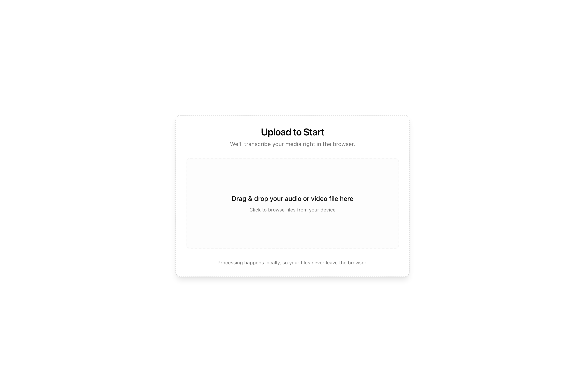
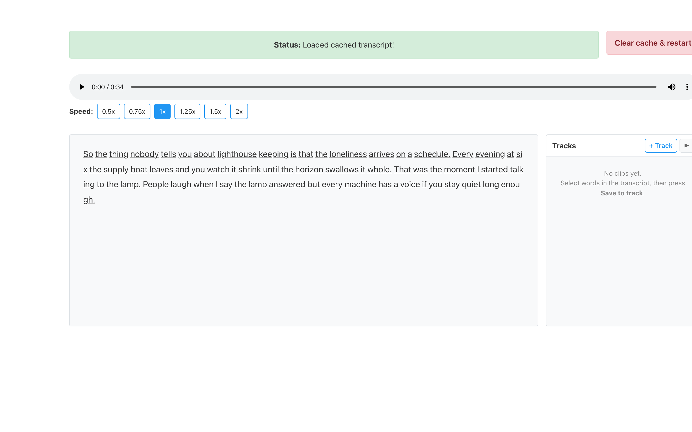
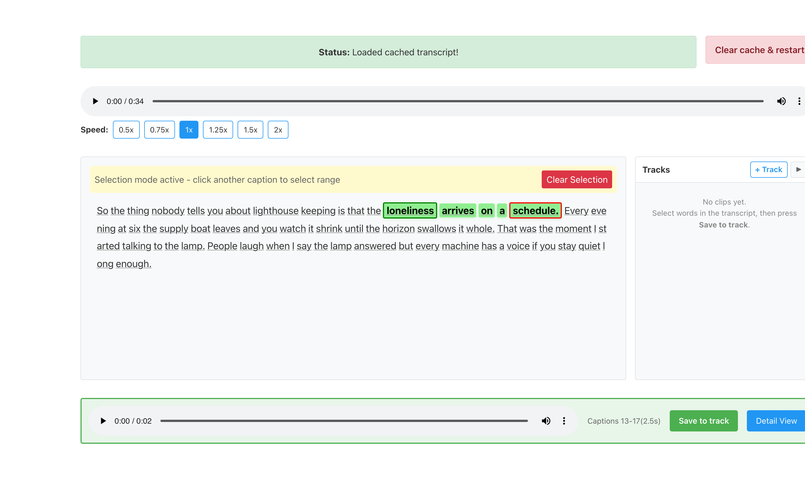
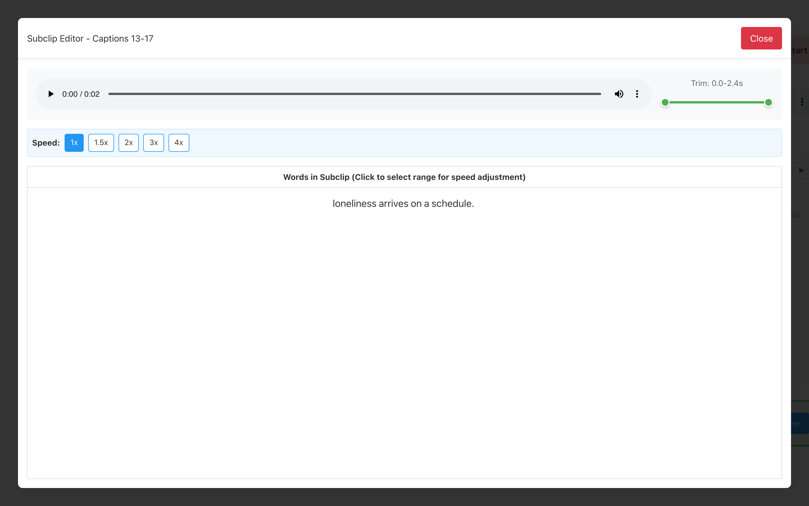
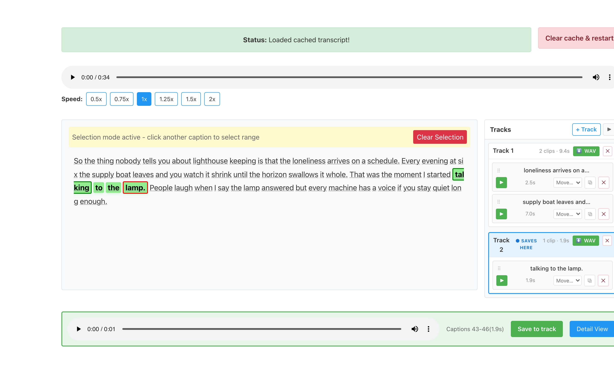

Turn a recording into clickable text. Cut audio by clicking words, arrange the pieces into tracks, and export each track as one file. Everything runs in your browser — recordings never leave your computer.
Use the ← / → arrow keys (or the buttons below) to step through. Each slide is a real screenshot of the app.


Transcription happens inside the browser. The same file opened later skips straight to this screen.


Make as many highlights as you like — each saved clip lands in the panel on the right and survives closing the page.

Highlight a sentence to cut a clip. Drag a list to arrange a montage. Export each track as a single file with smooth joins. No timeline, no waveform, no upload.
This deck lives in docs/ux-flow.html · screenshots regenerate via scripts/capture-ux-shots.mjs